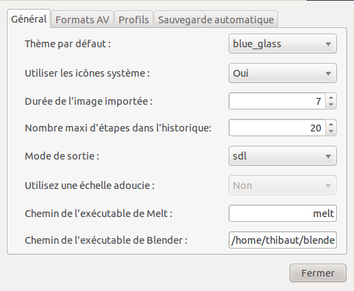
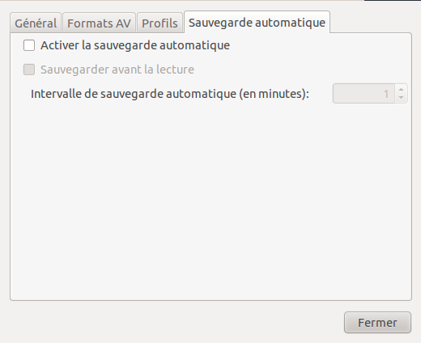
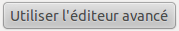
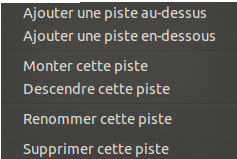
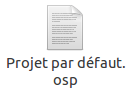

Vous souhaitez créer facilement des montages vidéo sous Linux ? Vous avez trouvé le logiciel qu'il vous faut ! :) OpenShot est un logiciel libre crée par une grande communauté de bénévoles qui va vous permettre de créer des montages vidéo en l'espace de quelques minutes.
Avant de commencer, un petit mot sur le logiciel que nous allons utiliser, qui est donc OpenShot.
Il a été crée en août 2008 par Jonathan Thomas, qui aujourd'hui encore poursuit son objectif de proposer un éditeur vidéo simple d'utilisation, agréable et efficace. Il a été entièrement codé en Python et est open-source : si vous êtes un programmeur chevronné, votre aide sera forcément la bienvenue ! :)
OpenShot est réputé pour supporter un grand nombre de formats d'images, d'audio et de vidéo. Vous pouvez donc aller du format .ogg au format .mp4 en passant par le format .mov ou encore les formats adaptés pour le visionnage sur l'une des plus célèbres plateformes de partage de vidéo, j'ai nommé YouTube ! Mais ce n'est pas tout. D'autres fonctionnalités et avantages font d'OpenShot un outil d'édition vidéo complet :
Il est multi-pistes
Il a deux créateurs de titres, l'un permettant d'en faire au format SVG et de les éditer de manière très précise, l'autre permettant d'en faire en 3D (la classe :waw: )
Il y a un grand nombre d'effets vidéo et audio et de transitions pour rendre votre montage agréable
et encore bien d'autres choses... ;)
La dernière version d'OpenShot à être sortie est la version 1.3.0 (14 Février 2011). Par rapport à la version 1.2.2, il y a de nombreuses nouveautés, comme par exemple :
Une stabilité accrue
Une interface revue et améliorée
Un catalogue d'effets, de transitions et de titres animés agrandi
Une exportation directe sur les plateformes en ligne de partage de vidéos
et bien plus encore... ;)
La présentation d'OpenShot est maintenant terminée, en route pour de nouvelles aventures ! :p
Tout d'abord, il faut installer OpenShot (ce qui me semble très logique :-° ).
Téléchargement/Installation depuis les dépôts officiels
Vous n'avez tout simplement qu'à ouvrir un terminal et à saisir la commande suivante (pour Ubuntu) :
sudo apt-get install openshot
Entrez votre mot de passe administrateur et patientez pendant le téléchargement et l'installation des paquets. Et voilà, c'est installé ! :)
Téléchargement/Installation de la dernière version depuis les sources tierces
Tout d'abord, nous devons récupérer le fichier .deb de l'installateur d'OpenShot. Pour cela, rendez-vous sur la page Launchpad du logiciel. Vous atterrissez sur la page suivante : Cliquez sur l'image pour l'agrandir
Ce que j'ai encadré en rouge est le fichier d'installation du programme tandis que ce qui est encadré en bleu est le fichier d'installation de la documentation du logiciel, c'est-à-dire si vous avez besoin d'aide pour l'utilisation d'OpenShot. Commencez donc par télécharger le fichier .deb contenant le logiciel (c'est-à-dire ce qui est encadré en rouge sur l'image). Une fois le fichier téléchargé, ouvrez-le. Vous devriez atterrir sur une page de la Logithèque Ubuntu (par défaut) :
Cliquez sur l'image pour l'agrandir
Vous n'avez qu'à cliquer sur "Installer" et à laisser l'installation d'OpenShot s'effectuer sur votre ordinateur. :)
Le logiciel est maintenant installé, rendez-vous un peu plus bas dans la page de la logithèque, et vous devriez apercevoir 2 cases à cocher :
La première permet d'installer en plus du logiciel le manuel d'utilisation d'OpenShot.
Mais, on ne devait pas télécharger ça via le fichier .deb du site Launchpad (encadré en bleu) ? o_O
Si, je vais y venir. C'est simplement du fait que les dépôts ne soient pas à jour avec la nouvelle documentation, ce qui voudrait dire que vous vous retrouveriez avec une documentation erronée en cas de problème. Laissez donc cette case décochée.
La seconde installe un plugin qui vous permettra d'exécuter de manière correcte les effets pour votre montage vidéo. Vous pouvez donc cocher cette case. :)
Vous pouvez cliquer sur le bouton "Appliquer les changements" qui est apparu quand vous avez coché la 2ème case. Maintenant, comme prévu, il faut aussi télécharger le fichier contenant la documentation d'OpenShot. Retournez donc sur la page Launchpad du logiciel et téléchargez le fichier .deb contenant la documentation (c'est-à-dire ce qui encadré en bleu sur la première image). Une fois le fichier téléchargé, ouvrez-le et confirmez l'installation (bouton "Installer" dans la logithèque Ubuntu).
Et voilà, tout est installé ! Nous pouvons maintenant démarrer le logiciel. :)
Maintenant qu'OpenShot est installé, vous pouvez l'ouvrir via le menu Applications-->Son et vidéo-->OpenShot Video Editor (si vous êtes sur Ubuntu).
Découverte de l'interface
Voilà ce que vous obtenez : Cliquez sur l'image pour l'agrandir Détaillons l'interface :
En rouge se trouve la traditionnelle barre d'outils du logiciel où vous pouvez commencer ou enregistrer un nouveau projet, annuler vos mauvaises actions ou les rétablir, importer des fichiers et enfin exporter votre vidéo.
En bleu, c'est l'espace de travail. C'est ici que seront stockés tous les fichiers projets qui vous serviront pour le montage de votre vidéo. Vous voyez aussi 3 autres onglets en haut de cet espace:
Transitions : Animations pour passer d'une vidéo à l'autre.
Effets : Rajouter des effets spéciaux pendant la lecture d'une vidéo ou d'une musique.
Historique : Affiche les dernières modifications que vous avez faites à votre projet.
En vert, l'aperçu de votre vidéo. Elle lit tout ce que vous avez fait à votre projet dans la timeline (j'en reparle plus bas). Utile pour encoder sans se tromper. ;)
Mais que veut dire encoder ? o_O
Ce mystère vous sera révélé quand vous arriverez à la partie sur l'exportation de votre vidéo.
Enfin en jaune, c'est la timeline de votre vidéo. La timeline indique tout ce qui sera affiché à un instant précis (qui sera indiqué grâce à un trait rouge de lecture). En gros, c'est ici que nous allons passer une grosse partie de notre temps. En haut à gauche de cette timeline, vous apercevez 8 boutons :
Ces boutons vous permettront de modifier au mieux votre vidéo. Nous y reviendrons plus tard dans le cours.
Enfin, en haut à droite de la timeline, il y a un outil de zoom :
Il permet de faire un zoom sur toutes les pistes du projet. Il vous servira sûrement beaucoup pour des réglages minutieux avec vos fichiers projet.
Paramètres
Ils sont accessibles via le menu Editer puis Préférences.
Onglet Général

Thème par défaut : Choisissez un thème parmi ceux présents pour personnaliser OpenShot. Il y en a pas mal, n'hésitez pas à tout essayer ! ^^ Mon thème favori restera le thème "blue_glass". ;)
Utiliser les icônes système : Choisissez si vous souhaitez utiliser les icônes (dossiers, vidéos, etc...) de votre thème Ubuntu (ou autre distribution Linux) actuel. Si vous refusez, OpenShot utilisera ses propres icônes.
Durée de l'image importée : Choisissez combien de temps une image importée figurera sur la timeline. Le temps par défaut est de 7 secondes.
Nombre d'étapes maxi dans l'historique : Choisissez combien d’évènements figureront au maximum dans l'onglet Historique de l'espace de travail.
Mode de sortie : Choisissez le mode de sortie de votre vidéo.
Utilisez une échelle adoucie : C'est un filtre permettant un adoucissement progressif des animations, des zooms, des panoramas et des rotations. Selon certaines circonstances, le choix "Non" peut vous être imposé.
Chemin de l'exécutable de Melt : Si vous possédez le logiciel Melt, indiquez le chemin de son exécutable ici.
Chemin de l'exécutable de Blender : Si vous utilisez le logiciel de modélisation 3D Blender, indiquez le chemin de son exécutable ici. Vous pourrez alors créer des titres animés en 3D.
Onglet Formats AV
Ici sont recensés tous les formats/codecs audio et vidéo supportés par OpenShot. La liste est grande. :) Pour recharger les codecs, cliquez simplement sur Recharger les codecs.
Onglet Profils
Ici est indiqué le profil par défaut qu'OpenShot utilisera pour l'exportation de vos vidéos. Un petit clic sur Gérer les profils nous donne ceci :
Pour créer votre propre profil, commencez par choisir un profil de départ et cliquez simplement sur le plus à côté du nom du profil. Vous pourrez alors débloquer les options grisées de la fenêtre et donc modifier le nom, la taille, le format de la vidéo et la fluidité (en trames par secondes). Pour effacer un profil, cliquez sur le bouton à côté du plus.
Onglet Sauvegarde automatique

On n'est jamais à l'abri d'un plantage quelconque du logiciel. La sauvegarde automatique, si vous l'activez, enregistrera en cache toutes vos modifications sur le projet selon un intervalle de minutes que vous pouvez régler. Vous pouvez même sauvegarder automatiquement juste avant de lire votre projet dans l'aperçu. Cette fonction vous sera très pratique et évitera les crises de nerfs si vous ne pouvez plus ouvrir un projet que vous aviez commencé il y a beaucoup de temps ! :p
Voilà, nous avons fait le tour de l'interface et des paramètres. Maintenant nous allons attaquer le montage de votre première vidéo ! :pirate:
Je suppose que vous aimeriez bien dire aux autres personnes ce que vous allez leur présenter ? Eh bien les titres sont là pour ça ! L'affichage d'un titre ne dure que quelques secondes et vous permettra de présenter brièvement votre vidéo.
Dans OpenShot, il existe 2 types de titres :
Le titre standard
Un titre simple et sans animation. Pour y accéder, dans le menu d'OpenShot cliquez sur Titre, puis "Nouveau titre". Et voici ce que vous obtenez :
Le type de titre utilisé par défaut est "Bar 1". En cliquant dessus, vous retrouverez une gigantesque liste de styles de titre pour votre montage. On retrouve parmi d'autres :
Des titres à style nuageux
Des titres avec des bulles en décor (un peu savonneux :lol: )
Et même des titres Creative Commons (si si) ! Voilà un exemple :
Choisissez donc votre style de titre, puis cliquez sur "Créer un nouveau titre". Il vous sera demandé d'insérer un nom pour votre titre.
Une fois que vous aurez validé votre titre, une autre boîte de dialogue s'affichera. Mais attention ! En fonction du style de titre que vous avez choisi, cette boîte de dialogue variera. Quelques exemples :
Boîte de dialogue pour le style "Bar 1" Ici le second champ affichera un texte "normal", tandis que le premier affichera un autre texte "en miroir".
Boîte de dialogue pour le style Creative Commons Chaque champ de texte vide représente un espace entre 2 paragraphes.
Cliquez enfin sur Appliquer, et admirez votre titre tout beau tout neuf ! :) Vous remarquerez que d'autres options sont disponibles :
Modifier le texte : Utile si vous vous êtes trompé lors de la saisie du texte de votre titre.
Propriétés de la police de texte : Personnalisez l'écriture et la forme de votre titre ici.
Premier bouton de couleur : Pour choisir de quelle couleur sera affiché votre titre.
Second bouton de couleur : Pour choisir la couleur du fond.
Vous avez aussi remarqué qu'un autre bouton est disponible :

Un petit clic sur celui-ci, et...
Vous pourrez modifier minutieusement votre titre grâce au logiciel d'images vectorielles Inkscape. :)
Une fois les modifications faites, enregistrez ceci à l'aide du raccourci clavier Ctrl + S, puis fermez l'éditeur.
Validez le tout, et votre titre apparaîtra sur votre liste de fichiers pour le projet. Vous n'avez plus qu'à cliquer-déplacer votre titre au début d'une des 2 pistes actuelles. Votre titre figure maintenant sur votre montage. :)
Le titre animé
Vous n'appréciez pas le style de titre tout plat et vous aimeriez faire de sublimes écrans de titre animés et en 3D ? Grâce à Blender, OpenShot est là pour vous servir ! :)
Pour accéder au menu des Titres animés, dans le menu d'OpenShot cliquez sur Titre puis "Nouveau titre animé". Et voici ce que vous obtenez :
Comme vous pouvez le constater, la liste des styles de titres animés est aussi large. Cliquez sur un style qui vous intéresse, puis modifiez ses paramètres 3D pour qu'il corresponde au mieux à vos envies.
Dès que tout est prêt, cliquez sur Générer (ou Exporter) en bas à droite. Soyez patient ! En fonction de ce que vous avez choisi, la création du titre peut durer plusieurs minutes. Votre titre 3D animé devrait maintenant apparaître sur la liste des fichiers projet. Cliquez-déplacez enfin le titre animé au début d'une des 2 pistes actuelles. Et c'est prêt ! :)
Importation et modification de fichiers projet
Nous rentrons maintenant dans le vif du sujet !
Importer des fichiers
Rien de plus facile : Dans la barre d'outils en haut de l'interface OpenShot, cliquez sur le petit plus
et choisissez les photos, les vidéos et les musiques que vous souhaitez importer. Moi personnellement pour ma vidéo exemple, j'ai choisi un fond vert et un fond bleu (oui je sais ça ne vole pas très haut :-° ). Les fichiers que vous avez importés apparaissent tous sur la liste des fichiers projet.
En haut de cette liste, il y a une barre de tri :
Vous pourrez donc facilement faire la différence entre tout ce qui est image, audio ou vidéo. Si vous recherchez aussi un fichier particulier, servez-vous de la barre de recherche sur le côté. ;)
Créer un dossier
Pour ranger plus facilement vos fichiers projet, vous pouvez créer des dossiers. Pour cela, faites un clic-droit sur la liste et choisissez "Créer un dossier".
Entrez le nom de votre dossier et validez. Votre dossier apparaît dans la liste. Pour y ajouter des fichiers, faites un clic-droit sur le fichier que vous souhaitez ajouter et choisissez "Déplacer le fichier vers le dossier..." puis le nom de votre dossier :
Insérer les fichiers projet sur les pistes
Il y a 2 manières d'insérer les fichiers projets sur les pistes :
En utilisant l'option "Ajouter à la timeline" : Pour cela, sélectionnez un ou plusieurs fichiers projet importés (pour en sélectionner plusieurs, maintenant la touche Ctrl enfoncée et cliquez sur les fichiers désirés), puis faites un clic-droit sur l'un d'eux et choisissez "Ajouter à la Timeline". Vous obtenez cet écran :
Ici, vous pouvez choisir à partir de quel moment dans la timeline doivent être lus ces fichiers, définir si vous souhaitez un fondu pour chacun des fichiers sélectionnés et leur durée et de même pour la transition. Les boutons que vous voyez en bas de la liste des fichiers projet servent entre autres à indiquer l'ordre d'insertion de ces derniers dans la timeline (flèches jaunes), à mélanger cet ordre (flèche bleue) ou à retirer les fichiers (signe - rouge).
En ajoutant vous même les fichiers projet dans la timeline : Vous n'avez qu'à cliquer-déplacer un fichier projet depuis la liste vers la timeline sur l'une des pistes déjà présentes.
Vous obtenez alors un résultat semblable à celui-ci :
Gérer les pistes
Comme vous l'avez constaté donc, nous avons 2 pistes de lecture par défaut. OpenShot est donc un logiciel de montage vidéo multi-pistes ! Vous devriez avoir aperçu une ligne rouge de lecture au début des 2 pistes. Tout ce qui sera atteint par cette ligne sera lu. Vous pouvez donc exécuter 2 images, 2 vidéos, 2 musiques, etc... ou plus encore en même temps ! :)
Si vous avez besoin de plus de place pour vos fichiers projet, vous pouvez rajouter une nouvelle piste en cliquant sur le bouton bleu Plus
. Vous avez aussi sans doute remarqué que les pistes contiennent tous 2 boutons :
Le premier bouton permet d'activer ou désactiver en un clic la vidéo de toute la piste choisie. Le second bouton permet de faire la même chose, mais avec le son.
Un petit clic droit sur le nom d'une piste nous donne ceci :

Vous pouvez donc rajouter des pistes au-dessus ou en-dessous de celle que vous avez choisi, déplacer la piste en haut ou en bas, la renommer, ou encore... la supprimer ! :diable:
Renommer une piste
Faites un clic-droit sur la piste, puis sur "Renommer cette piste".
Le renommage d'une piste vous sera utile dans le cas où vous souhaitez organiser correctement votre vidéo. Un exemple :
Ici, j'ai une piste spécialement conçue pour l'audio et la musique et j'ai une autre piste où je ne mettrais que des images. Si vous après avez besoin d'encore plus de place pour bien vous organiser, vous pouvez rajouter une piste et la renommer en par exemple "Audio/Musique 2"... ;)
Redimensionner un fichier projet
Vous souhaiteriez qu'une image dure plus ou moins longtemps que le temps par défaut ? Faites appel à l'outil Redimensionner ! Il est accessible via le bouton avec les 2 flèches.
Placez-vous à l'extrémité droite d'une image ou d'une vidéo et cliquez-déplacez la souris où vous voulez. En la déplaçant vers la gauche, vous réduisez le temps d'apparition du fichier en question. Et en la déplaçant vers la droite, vous rallongez son temps d'apparition ! Si vous rallongez suffisamment une image, vous verrez apparaître son aperçu ainsi que 2 autres boutons :
Ces 2 boutons fonctionnent comme les 2 boutons de gestion des pistes.
Découper un fichier projet
Prenons un exemple : Nous voulons qu'une image fasse un zoom progressif et nous voulons aussi que cette même image revienne dans un état normal au bout d'un certain temps. Comment faire ?
Ah, je sais moi ! On n'a qu'à cliquer-déplacer cette image de la liste des fichiers projet et ça en fera une nouvelle !
Ce n'est pas faux. Cependant il existe un moyen plus rapide et plus simple pour ceci : l'outil Découper ! Il est accessible via ce bouton :
Une fois que l'outil Découper est sélectionné, cliquez sur la partie que vous souhaitez découper, et... SCHLIIIIIING ! :p
Mon image coupée en deux par l'outil Découper Tel un karatéka qui casse des briques :lol: , l'image est instantanément coupée en 2 fichiers projets qui fonctionneront indépendament ! N'hésitez pas à vous en servir. Cet outil vous sera très utile et très pratique tout au long de ce montage. :)
Petite astuce : Vous pouvez aussi découper en un clin d'oeil et sur toutes les pistes les images/vidéos/musiques se situant sur le trait rouge de lecture. Pour cela amenez le trait rouge de lecture à un endroit où vous souhaitez découper :
Maintenant, faites un clic-droit sur le haut du trait rouge
et choisissez "Découper tous les clips". Tout ce qui est sur le trait rouge est charcuté en une seconde ! :D
Outils de repère
Ajouter un repère : Si un jour vous faites une vidéo qui sera très longue, il se peut que vous vous perdiez dans le montage. Dans ce cas, faites appel à l'option Ajout de repère. Déplacez le trait rouge de lecture là ou vous voulez ajouter le repère, puis cliquez sur le bouton d'ajout de repère
. Cela laissera une marque sur votre timeline :
Pour supprimer le repère, cliquez simplement sur la marque, puis sur "Supprimer le repère".
Navigation entre les repères : En créant plusieurs repères, vous pourrez rapidement vous diriger vers chacun d'eux pour modifier plus vite votre long projet et vous faire gagner un temps précieux. ^^ Pour vous rendre à un repère précédent, cliquez sur le bouton
, et pour vous rendre au repère suivant, cliquez sur le bouton
.
Le magnétisme
Le magnétisme permet à un fichier projet de se "coller" à la ligne rouge de lecture ou à un fichier projet si il près de ces derniers. Vous pouvez l'activer ou le désactiver avec ce bouton :
Si vous souhaitez davantage de précisions, désactivez-le.
Effets et transitions
Vous vous êtes familiarisé avec les outils d'OpenShot. Maintenant il est temps de passer à la vitesse supérieure ! Des effets et des transitions en tous genres... De quoi rendre agréable votre vidéo ! Oh ! Je vois que vous en salivez déjà. :p Alors on y va !
Ajouter des effets à votre vidéo
Les effets sont accessibles via l'onglet "Effets" en haut de la liste des fichiers projet.
En regardant un peu la liste, vous verrez qu'il y a de tout ! Des effets pour vos images et pour vos sons ! :) Maintenant, cliquez-déplacez l'effet qui vous plaît sur un fichier projet de la timeline.
Et voilà le travail ! :)
Pour des réglages plus avancés, faites un clic-droit sur le fichier projet de votre choix, puis cliquez sur "Propriétés". Allez dans l'onglet "Effets", cliquez sur le nom d'un effet, puis réglez ses paramètres.
Exemple de paramètres pour l'effet de viellissement "Poussières"
Une fois de plus, les paramètres varient en fonction de l'effet choisi.
Les transitions
Les transitions sont des animations rendant le passage d'une image à l'autre plus esthétique. Elles sont accessibles via l'onglet Transitions en haut de la liste des fichiers projet.
Il y a beaucoup de transitions, alors n'hésitez pas à tout essayer ! ^^ Pour intégrer une transition, cliquez-déplacez là entre 2 pistes :
Mais voilà, dans mon exemple, il y a un petit problème. Ma transition est configurée pour commencer à partir de vert, seulement je veux que ma transition commence à partir de bleu. o_O
Alors ce n'est pas possible ?
Mais bien sûr que si ! :p Il suffit de faire un clic-droit sur la transition, puis sur "Changer de direction".
Attendez, ce n'est pas fini ! Vous pouvez même importer vos propres transitions !
Mais je ne sais pas faire des transitions moi ! :waw:
Il n'y a pas besoin d'être un grand champion de graphisme pour en faire. Tout ce que vous avez à faire c'est de choisir une image PNG et de l'importer via le menu Fichier, puis Importer une nouvelle transition.
Personnellement j'ai pris une image de Football (puisque pratiquement tout le monde aime ça :D ). Votre nouvelle transition apparaît en bas de la liste. Cliquez-déplacez là entre 2 pistes et changez la transition de direction si nécessaire. Et voilà mon résultat :
Et c'est ainsi que vous pourrez faire des dizaines d'autres transitions personnalisées ! ;)
Si vous êtes ici, c'est que vous avez réussi à faire un montage vidéo en tentant d'exploiter presque toutes les fonctionnalités d'OpenShot. Alors félicitations, car le plus dur est fait ! Nous allons pouvoir maintenant procéder à l'exportation de votre vidéo ! :)
Pourquoi exporter ?
Faisons un test. Enregistrez votre projet à un endroit où vous le souhaitez (Fichier-->Enregistrer le projet). Allez ensuite à l'endroit où vous avez mis le fichier. Vous devriez remarquer un fichier de ce genre :

Concentrons-nous sur l'extension du fichier (.osp). Cette extension n'est reconnue UNIQUEMENT que par OpenShot. Ainsi, si vous devez montrer votre projet à quelqu'un, il devra obligatoirement posséder Linux et OpenShot. Mais ce n'est le cas que de peu de monde. L'exportation permet d'éviter ceci : elle encode votre vidéo pour la rendre accessible à tous. Vous pourrez donc encoder votre vidéo en format WMV, AVI et plein d'autres formats encore.
Préparer l'exportation
Pour accéder au menu d'exportation, cliquez sur le petit rond rouge dans la barre d'outils en haut de l'interface.
Renommez votre vidéo, puis indiquez son emplacement. Vous pouvez également indiquer si vous souhaitez l'exporter en local ou sur le web, mais pour le web, ce sera pour plus tard. ;)
Profil de démarrage
5 profils de démarrage sont à votre disposition :
Blu-Ray/AVCHD : Si vous comptez lire votre vidéo sur un Disque Blu-Ray ou un support AVCHD, choisissez cette option.
DVD : Si vous comptez lire votre vidéo sur un Disque DVD, choisissez cette option.
Périphérique : Si vous comptez lire cette vidéo avec Apple TV ou un appareil Nokia nHD ou encore votre XBox 360, choisissez cette option.
Site Web : Si vous comptez envoyer votre vidéo sur des services en ligne tels que YouTube, Picasa, Flickr et d'autres, choisissez cette option.
Tous les formats : Votre vidéo pourra être lue dans un format adapté pour les ordinateurs.
Choisissez le profil de votre choix pour pouvoir déverrouiller les autres options.
Ceci dit, choisissez le profil Tous les formats.
Options
Destination : Choisissez ici dans quel format sera encodée votre vidéo. Je recommande le mode AVI (mpeg2).
Profil vidéo : Il est recommandé de choisir le profil DV NTSC.
Qualité : Choisissez la qualité de votre vidéo.
Réglages avancés
Alors comme ça on est un aventurier et on veut essayer de régler les paramètres d'exportation à la perfection ? Quelle courage, à ce que je vois ! ^^ Vous pouvez donc cliquer sur l'onglet "Avancé" en haut des paramètres.
Options avancées
Exporter vers : Ici vous avez 2 choix :
Vidéo & Audio : Votre vidéo sera encodée en un seul fichier selon les formats audio et vidéo que vous choisirez.
Séquence d'images : Votre vidéo se transforme en une grande série d'images au format .png, chaque image représentant une trame (mesure utilisée dans le montage vidéo). Si votre vidéo fait 60 secondes et que vous l'exportez en sachant que le nombre de trames par secondes est de 30 (par défaut)... je vous laisse imaginer le résultat. :lol:
60 X 30 = 1800 C'est donc 1800 images qui seront exportées ! :waw:
Profil (Vidéo & Audio)
Votre vidéo sera encodée selon le profil de votre choix. Il y en a beaucoup, mais des informations sont en bas du nom du profil pour vous aider (Taille en pixels et format d'affichage de la vidéo (4:3 ou 16:9), trames par secondes, etc... )
Paramètres de la séquence d'images (Séquence d'images)
Format d'image : Choisissez ici sous quel format seront exportées vos images. Le seul format disponible (et idéal ^^ ) pour l'instant est le format .png
Paramètres vidéo (Vidéo & Audio)
Format de la vidéo : Choisissez ici sous quel format devra sortir votre vidéo.
Codec vidéo : Choisissez ici selon quel moyen la vidéo sera encodée.
Débit/Qualité : Choisissez ici la qualité de votre vidéo. Vous pouvez aller jusqu'à la qualité d'un Blu-Ray, mais cela prendra beaucoup de place sur votre disque dur.
Paramètres audio (Vidéo & Audio)
Codec audio : Choisissez ici selon quel moyen l'audio de votre vidéo sera encodé.
Taux d’échantillonnage : Selon quelle fréquence seront captés les signaux analogiques, qui seront transformés en signaux numériques et qui formeront l'audio. Plus vous augmentez le taux, plus le son sera fluide.
Nombre de canaux : Je recommande de laisser le nombre de canaux actuels pour avoir une qualité optimale de son.
Débit/Qualité : Choisissez la qualité (en kb/s) de votre son. Vous pouvez choisir la meilleure qualité ("256 kb/s- Near CD quality" ou qualité CD), mais cela alourdira le poids total de votre vidéo.
Prêt à exporter ?
Une fois tous vos paramètres corrects, cliquez sur le bouton "Exporter la vidéo". Patience ! Le temps d'exportation dépend de la durée totale du montage et du mode et de la qualité choisis pour l'exportation.
Et plus tard, un message vous informera que l'exportation est terminée. Votre montage est donc prêt à être consommé ! :D
Votre montage s'est transformé en fichier vidéo et a atterri avec succès sur votre ordinateur. :D Mais vous souhaitez aller plus loin et rendre votre vidéo visible par un nombre incroyable d'internautes du monde entier ?
OpenShot a pensé à vous. Une fonction d'envoi de vidéo en ligne vers Youtube ou vers Vimeo a été ajoutée au logiciel. Du coup vous n'avez même plus besoin de vous rendre sur la plateforme concernée pour "uploader" vos vidéos : OpenShot s'en occupe à votre place. :)
Mais, on ne pouvait pas faire ça via le menu d'exportation des vidéos (avec l'option "Site Web") ?
La différence est que le menu d'exportation des vidéos ne fait qu'encoder selon le format adapté au site web : il ne l'envoie donc pas directement sur le site concerné (à l'exception de Youtube et de Vimeo, ce que nous allons voir dans quelques instants) (en gros c'est vous qui devez vous débrouiller pour incorporer la vidéo :-° ).
Maintenant que ceci est dit, allez dans le menu "Fichier" en haut de l'interface d'OpenShot et choisissez "Envoyer une vidéo...".
---
Comme vous le voyez, que vous disposiez d'un compte sur une plateforme et pas sur l'autre, il vous sera presque demandé la même chose. D'abord, vous devez choisir quelle vidéo vous souhaitez envoyer (elle doit donc avoir déjà été exportée). Ensuite, il faut choisir le titre pour votre vidéo et une brève description l'accompagnant. Enfin, vous devrez vous connecter sur votre plateforme de partage de vidéos en ligne en saisissant votre identifiant et votre mot de passe.
Une fois tout ceci fait, vous pouvez cliquer sur "Envoyer une vidéo". Patience ! L'upload de votre vidéo peut durer un certain temps en fonction de sa durée totale. Un message vous informera que l'upload est terminé. Félicitations, votre vidéo est maintenant en ligne ! :)
Et voilà ! Ce tutoriel est maintenant terminé. J'espère que vous l'avez bien apprécié. Vous pourrez maintenant conquérir le monde entier avec vos créations ! ^^
Contribuer à OpenShot
OpenShot étant un logiciel open-source, vous pouvez vous aussi apporter votre pierre à l'édifice et contribuer à la prochaine version du logiciel. Pour cela, rendez-vous sur la page Launchpad du logiciel. Une fois que vous vous serez inscrit sur Launchpad, vous pourrez aider des manières suivantes :
Améliorer le code : Vous pouvez télécharger le code source du logiciel, le modifier et proposer le nouveau code à l'équipe du logiciel.
Aider à la traduction : Si vous ne savez pas programmer mais que vous souhaitez tout de même contribuer au logiciel, vous pouvez aider à la traduction du logiciel en une langue que vous maîtrisez (par exemple le français :p ).
Signaler des bugs à l'équipe : Il se peut que tout au long de votre aventure avec OpenShot vous rencontriez des bugs ne vous permettant de vous servir d'une fonctionnalité. Si tel est le cas, n'hésitez pas à le signaler à l'équipe d'OpenShot ! Vous n'aurez qu'à rédiger un court texte expliquant votre problème (vous devrez écrire en anglais si vous souhaitez espérer avoir une réponse...)
Aider d'autres utilisateurs : Vous pourrez aider d'autres personnes en difficulté avec le logiciel. Une communauté francophone sur le logiciel existe, vous n'aurez donc pas besoin d'écrire en anglais pour aider. :)
Si vous contribuez à ce logiciel, votre nom figurera dans la liste des crédits à propos d'OpenShot (Aide-->A propos d'OpenShot-->Crédits) ! :)
Un forum sur OpenShot existe, vous pourrez également y poser toutes vos questions et signaler vos problèmes (en anglais, mais une communauté francophone existe aussi).
Un autre membre du Site du Zéro très actif sur ce logiciel, Eolinwen, a récemment crée un blog (sous le nom de Cenwen's Blog), dans lequel il parle du logiciel libre et aussi plus souvent d'OpenShot. Je vous invite à aller y faire un tour. ;)
Sur ce, je vous dis à bientôt et bonne continuation ! :)


{kind=link}
{kind=link}